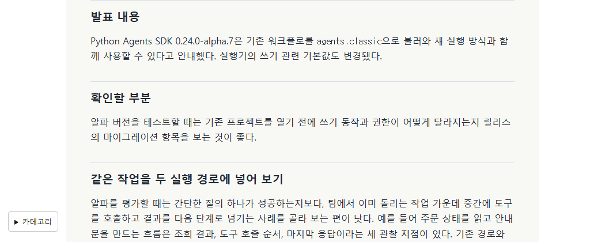

Tracefolio REPORTS & ISSUES
Tracefolio REPORTS & ISSUES문문동준 개발 블로그수정사항
미로 블로그 65편의 문체와 서술 정리
검증 대기개발일지는 작업의 고민을 중심으로, 동향과 기술 글은 읽는 사람에게 설명하는 존댓말로 다듬었습니다.
작업 결과
편집 원고 65편을 존댓말로 정리했습니다. 펭귄 모델 글은 황제펭귄의 외형과 얼음에서 물로 들어가는 움직임 사이의 선택을 중심으로 다시 썼습니다.
변경 내용
적용 내용
개발일지 30편에서 원본 보고서의 검증 문장과 수치를 글의 주제에 맞게 덜어내고, 글마다 실제 작업의 선택을 설명하는 문단을 썼습니다. 동향 글 33편과 게임 기술 2편의 종결 어미와 반복되는 절차 설명도 정리했습니다.
대화 기록
- 사용자(시각 미기록) — 펭귄 모델 글에 바이트와 용량을 나열할 이유가 없으며 외형과 아쉬운 점을 중심으로 적어 달라고 했습니다.
- 사용자(시각 미기록) — “모두 펭귄 말고 모두”라고 범위를 명시하고 “~했습니다. ~에요.”처럼 존댓말로 쓰라고 요청했습니다.
- AI(시각 미기록) — 다섯 게시판 65편을 편집하고 운영 확인을 진행했습니다.
검증
블로그 빌드와 운영 배포 후 기존 주소 65곳의 본문을 이전 배포와 대조했습니다. 이번 편집의 실측 범위는 497~1741자입니다. 65편 검증 자료 · 65편 전후 화면 전체.

남은 사항
다섯 게시판의 편집 원고가 대상입니다. 별도로 연결된 원본 프로젝트 보고서는 편집 범위 밖입니다. 전역 지침은 변경하지 않았습니다.
작업 시간
- 제안 시간: 첫 예상 5~8분. 이후 기존 편집 원고 전체와 존댓말 조건을 반영했습니다.
- 실제로 완료된 시간: 2026-11-09 20:51:03 KST에 확인을 시작했고 운영 근거 수집 시각은 2026-11-09 20:58:07 +09:00ST입니다. 보고서 공개 확인 시각은 최종 응답에 기록합니다.
- XERJ: 미사용 — rg로 보고서 문단과 비존댓말 종결을 확인하고 Chrome에서 운영 본문을 대조했습니다.